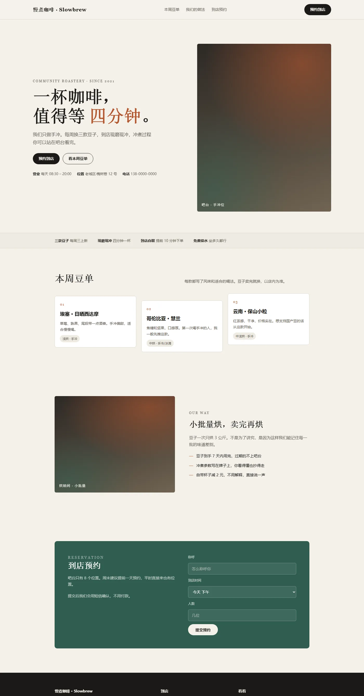
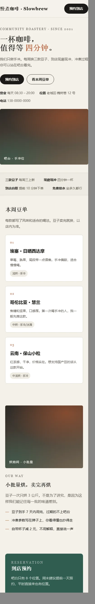

Case Study 01 · 门店单页官网
客户的要求只有三句话：一页就够、手机上要好看、客人能预约。这一页把从需求到上线的过程拆开给你看。
客户不会说"我要一个响应式落地页"。他说的是一句句大白话，我的活是把这些话翻译成能做的需求：
| 客户原话 | 我理解成 | 落到页面上 |
|---|---|---|
| "我就一页，别搞复杂" | 单页 + 锚点跳转 | 顶部固定导航，三个锚点 |
| "手机上要好看" | 移动优先，不是缩小版 | 860px 断点，手机端一列到底 |
| "客人要能留电话预约" | 要一个转化区 | 墨绿反白区块 + 三步表单 |
| "我不会维护，别让我学东西" | 零依赖的单文件 | 一个 HTML，改字用记事本就行 |
单页最容易做成"模板套娃"。这三个决定是为了让它看起来不像模板：
米白纸底、近黑正文、砖红强调、墨绿区块。四个值集中在 :root 里。
堆一堆相近的灰，页面上每个元素都在抢注意力，反而没有一个重点。
第 2 张下移 18px，第 3 张上移 10px，形成一点节奏。
三张卡片一样高、一样宽、一样的留白，一眼就能看出是模板。
整页都是米白，只有预约那一段是深色。
如果每段都是白底，访客滚到底也不会特别注意"这里能预约"。
客户还没给实拍图，就用渐变 + 噪点先顶上，一点带宽都不占。
为占位放一张网上的图，既有版权风险，又拖慢打开速度。
挑三段真正影响"好不好用"的写法出来。
① 换配色只改 4 行 —— 客户以后想换颜色，不用碰其它任何地方：
:root{
--paper:#F4F1EA; /* 纸底 */
--ink:#1B1A17; /* 正文 */
--terra:#B4552D; /* 强调色 */
--moss:#2F5D50; /* 深色区块 */
}② 错落卡片要和手机端复位成对写 —— 只写一半，手机上会溢出：
.item:nth-child(2){transform:translateY(18px)}
.item:nth-child(3){transform:translateY(-10px)}
@media (max-width:860px){
.item:nth-child(2),.item:nth-child(3){transform:none}
}③ 一行 clamp 顶掉三档媒体查询 —— 字号和留白都跟着屏幕走：
.hero h1{font-size:clamp(34px,6.2vw,68px)}
.wrap{padding:0 clamp(20px,6vw,88px)}④ 照片位是纯 CSS 的，零请求 —— 客户给了实拍图，换成 background-image 就行：
.shot{background:
radial-gradient(120% 90% at 78% 12%,rgba(180,85,45,.55),transparent 60%),
radial-gradient(90% 80% at 12% 88%,rgba(47,93,80,.5),transparent 62%),
linear-gradient(160deg,#2B2723,#4A4238 55%,#6B5F4E)}
.shot::after{content:"";position:absolute;inset:0;opacity:.22;
background-image:url("data:image/svg+xml;utf8,<svg>…feTurbulence 噪点…</svg>")}一个 HTML 文件，扔到任何静态托管（Vercel / 虚拟主机 / 宝塔）都能跑。没有数据库、没有构建步骤、不引外部字体和图片库。


单页 · 5 个模块 手机适配 表单区 免费改 2 次 源码交付
| 档位 | 价格 | 包含 |
|---|---|---|
| 基础（就是上面这个） | ¥399 起 | 单页 + 5 个模块 + 手机适配 + 改 2 次 |
| 标准 | ¥699 起 | 单页 + 8 个模块 + 表单对接（能真的收到消息）+ 改 3 次 |
| 加购 | 每页 +¥200 | 多页面、多语言、后台可编辑 |
本页是演示项目，品牌、地址、电话、豆单都是虚构的，用来展示页面结构和技术实现。